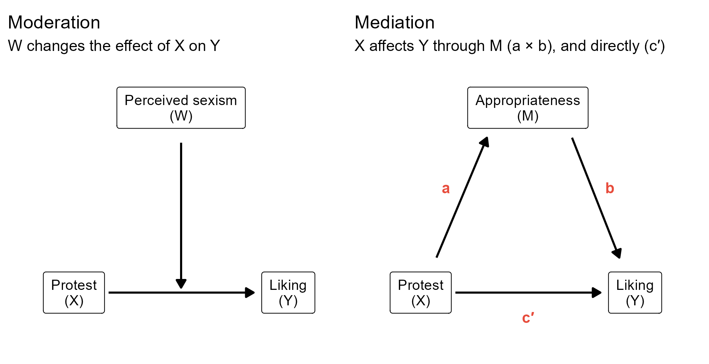
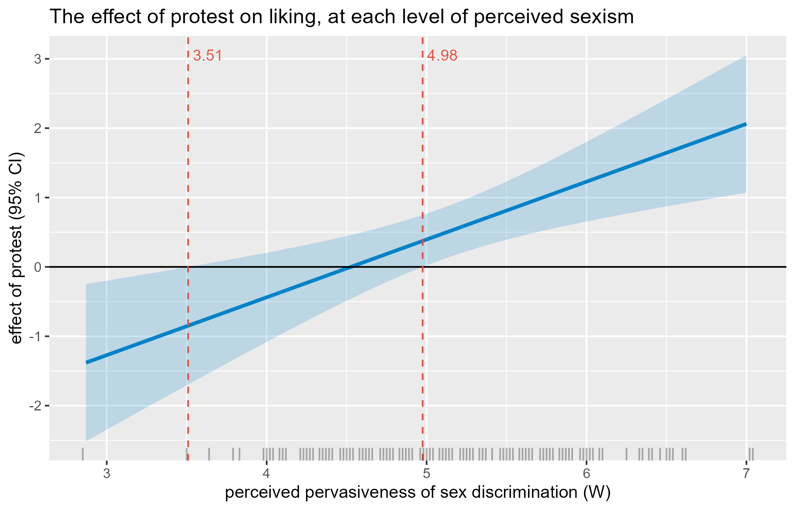
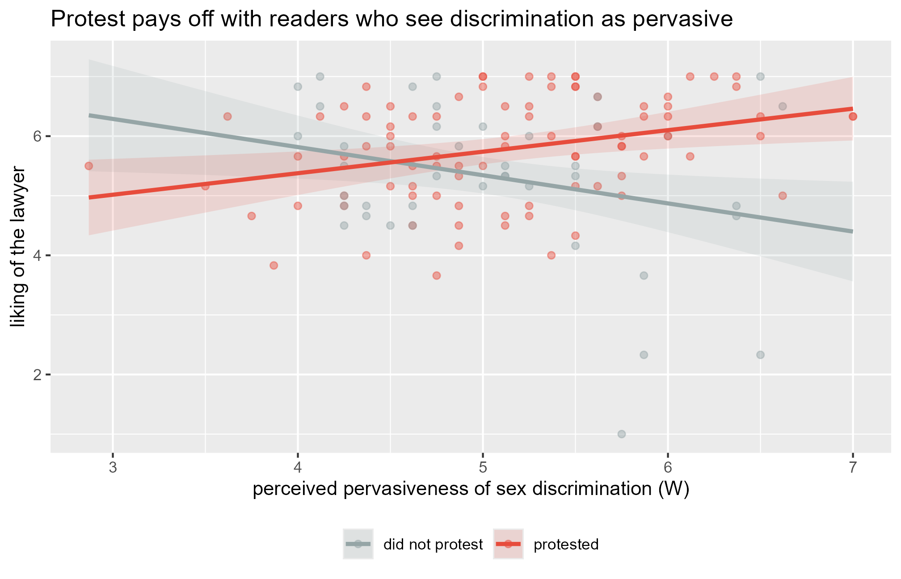
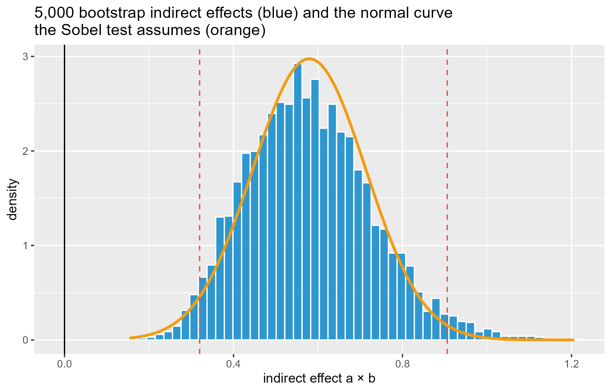
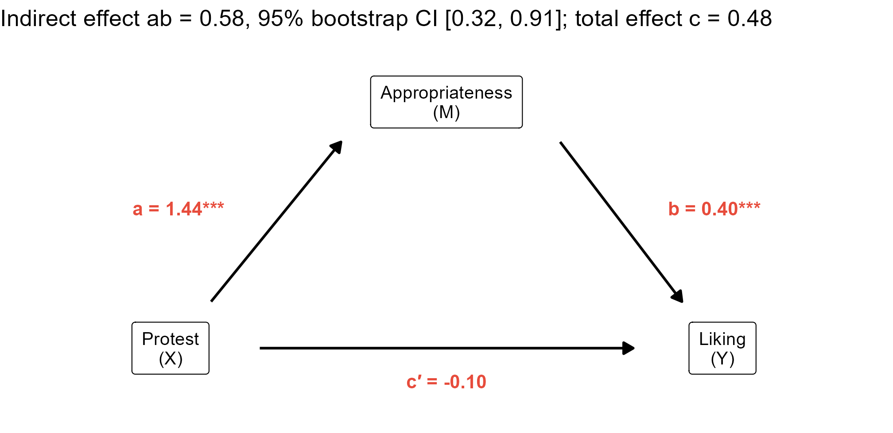

Code
library(ggplot2)
library(patchwork) # put plots side by side
library(boot) # bootstrap confidence intervals
library(lavaan) # the mediation model as a path modelA female lawyer loses a promotion to a less qualified male colleague. In one version of the story she protests the decision; in the other she accepts it. Do people like her more or less when she protests?
Garcia, Schmitt, Branscombe and Ellemers (2010) asked 129 women to read one of the versions, chosen at random, and to rate how much they liked the lawyer. Two other questions make the data interesting:
| Moderation | Mediation | |
|---|---|---|
| Question | When, or for whom, does X affect Y? | How, or why, does X affect Y? |
| The third variable | A moderator W changes the size or direction of the effect of X | A mediator M carries the effect: X changes M, and M changes Y |
| In a model | An interaction X × W | Two regressions and the product of two paths, \(a \times b\) |
| Here | Does the effect of protest depend on perceived sexism? | Does protest raise liking by making her response seem more appropriate? |
# a path diagram: boxes, arrows between them, and labels on the arrows
draw_paths <- function(boxes, arrows, title, subtitle = NULL) {
ggplot() +
geom_segment(data = arrows, aes(x, y, xend = xend, yend = yend),
arrow = arrow(length = unit(0.22, "cm"), type = "closed"), linewidth = 0.7) +
geom_label(data = boxes, aes(x, y, label = label), size = 3.6, fill = "white",
label.padding = unit(0.45, "lines"), lineheight = 0.9) +
geom_text(data = arrows, aes(lx, ly, label = label), size = 3.8, colour = "#E74C3C", fontface = "bold") +
coord_cartesian(xlim = c(0, 10), ylim = c(0.5, 6)) +
theme_void(base_size = 11) +
labs(title = title, subtitle = subtitle)
}
moderation <- draw_paths(
boxes = data.frame(x = c(1.6, 8.4, 5), y = c(1.5, 1.5, 5.2),
label = c("Protest\n(X)", "Liking\n(Y)", "Perceived sexism\n(W)")),
arrows = data.frame(x = c(2.7, 5), y = c(1.5, 4.5), xend = c(7.3, 5), yend = c(1.5, 1.6),
label = c("", ""), lx = 0, ly = 0),
title = "Moderation", subtitle = "W changes the effect of X on Y")
mediation <- draw_paths(
boxes = data.frame(x = c(1.6, 8.4, 5), y = c(1.5, 1.5, 5.2),
label = c("Protest\n(X)", "Liking\n(Y)", "Appropriateness\n(M)")),
arrows = data.frame(x = c(2.1, 6.4, 2.7), y = c(2.2, 4.6, 1.5), xend = c(3.7, 7.9, 7.3), yend = c(4.6, 2.2, 1.5),
label = c("a", "b", "c′"), lx = c(2.4, 7.6, 5), ly = c(3.6, 3.6, 1.0)),
title = "Mediation", subtitle = "X affects Y through M (a × b), and directly (c′)")
moderation + mediation
Both use real data: the Garcia data set of the psych package (data("GSBE", package = "psych")), the same data Hayes (2022) uses in his book on these methods.
data("GSBE", package = "psych") # loads the data frame Garcia
d <- data.frame(protest = Garcia$prot2, # 0 = she did not protest, 1 = she protested
sexism = Garcia$sexism, # how pervasive the reader believes sex discrimination is (1-7)
respappr = Garcia$respappr, # how appropriate the reader found her response (1-7)
liking = Garcia$liking) # how much the reader liked her (1-7)
table(protest = d$protest)protest
0 1
41 88 protest sexism respappr liking
1 0 5.07 3.88 5.31
2 1 5.14 5.32 5.79 protest sexism respappr liking
0.47 0.78 1.35 1.05 | Variable | Role | Meaning |
|---|---|---|
protest |
X | 0 = the lawyer accepted the decision (41 readers), 1 = she protested (88 readers; the original study had two kinds of protest, combined here) |
sexism |
W, the moderator | The reader’s belief that sex discrimination is pervasive in society, 1 to 7 |
respappr |
M, the mediator | How appropriate the reader found the lawyer’s response, 1 to 7 |
liking |
Y | How much the reader liked the lawyer, 1 to 7 |
On average the lawyer who protested was liked a little more (5.79 against 5.31) and her response was judged much more appropriate (5.32 against 3.88). Because the version of the story was assigned at random, the two groups do not differ in perceived sexism.
Moderation is an interaction: we add the product of X and W to the regression.
\[\text{liking} = b_0 + b_1\,\text{protest} + b_2\,\text{sexism} + b_3\,(\text{protest} \times \text{sexism}) + e\]
Rearranging shows what \(b_3\) does. The effect of protest is no longer one number; it is a line that depends on sexism:
\[\text{effect of protest} = \theta(\text{sexism}) = b_1 + b_3 \times \text{sexism}\]
If \(b_3 = 0\), protest has the same effect for every reader. If \(b_3 > 0\), protest helps more the more pervasive the reader believes discrimination to be.
In the equation above, \(b_1\) is the effect of protest when sexism is 0. But sexism runs from 1 to 7, so “sexism = 0” is a reader who does not exist. Subtracting the mean first (mean-centring) makes 0 mean “a reader of average sexism”:
d$sexism_c <- d$sexism - mean(d$sexism) # 0 = average perceived sexism
fit_raw <- lm(liking ~ protest * sexism, data = d)
fit_mod <- lm(liking ~ protest * sexism_c, data = d) # protest * sexism_c = protest + sexism_c + protest:sexism_c
round(rbind(uncentred = coef(fit_raw), centred = coef(fit_mod)), 3) (Intercept) protest sexism protest:sexism
uncentred 7.706 -3.773 -0.472 0.834
centred 5.289 0.493 -0.472 0.834You may read that centring is needed to “avoid multicollinearity” between X and X × W. It lowers that correlation, but it changes nothing in the test of the interaction (Echambadi & Hess, 2007). Centre for interpretation.
Call:
lm(formula = liking ~ protest * sexism_c, data = d)
Residuals:
Min 1Q Median 3Q Max
-3.9894 -0.6381 0.0478 0.7404 2.3650
Coefficients:
Estimate Std. Error t value Pr(>|t|)
(Intercept) 5.2885 0.1547 34.184 < 2e-16 ***
protest 0.4926 0.1872 2.631 0.00958 **
sexism_c -0.4725 0.2038 -2.318 0.02205 *
protest:sexism_c 0.8336 0.2436 3.422 0.00084 ***
---
Signif. codes: 0 '***' 0.001 '**' 0.01 '*' 0.05 '.' 0.1 ' ' 1
Residual standard error: 0.9888 on 125 degrees of freedom
Multiple R-squared: 0.1335, Adjusted R-squared: 0.1127
F-statistic: 6.419 on 3 and 125 DF, p-value: 0.0004439| Row | Meaning here |
|---|---|
(Intercept) |
Predicted liking when protest = 0 and sexism is average: 5.29 |
protest |
The effect of protest for a reader of average sexism: 0.49 points more liking |
sexism_c |
The effect of sexism when she did not protest (protest = 0): readers who see more discrimination like the non-protesting lawyer less |
protest:sexism_c |
How much the effect of protest grows for each point of sexism: 0.83. This is the moderation test |
With an interaction in the model, the “main effects” are conditional effects: each is the effect of one variable when the other is 0. That is why centring matters.
The interaction can also be tested as one more step of a hierarchical regression: first the two predictors, then their product.
Analysis of Variance Table
Model 1: liking ~ protest + sexism_c
Model 2: liking ~ protest * sexism_c
Res.Df RSS Df Sum of Sq F Pr(>F)
1 126 133.66
2 125 122.21 1 11.451 11.713 0.0008396 ***
---
Signif. codes: 0 '***' 0.001 '**' 0.01 '*' 0.05 '.' 0.1 ' ' 1 R2_main_effects R2_with_interaction delta_R2 t_squared
0.05229818 0.13349060 0.08119242 11.71256985 The interaction adds 8.1% of explained variance. The F-change is the square of the interaction’s t: for one added term the two tests are the same test.
The conditional effect of protest at a value \(w\) of (centred) sexism is \(\theta(w) = b_1 + b_3 w\). Its standard error comes from the variances and the covariance of the two coefficients, all in vcov(fit_mod):
\[SE[\theta(w)] = \sqrt{\operatorname{Var}(b_1) + w^2 \operatorname{Var}(b_3) + 2w \operatorname{Cov}(b_1, b_3)}\]
A common choice is to probe at one SD below the mean, the mean, and one SD above (Aiken & West, 1991):
b <- coef(fit_mod); V <- vcov(fit_mod)
w <- c(-1, 0, 1) * sd(d$sexism) # centred values: -1 SD, mean, +1 SD
theta <- b["protest"] + b["protest:sexism_c"] * w
se <- sqrt(V["protest", "protest"] + w^2 * V["protest:sexism_c", "protest:sexism_c"] +
2 * w * V["protest", "protest:sexism_c"])
df_res <- df.residual(fit_mod)
slopes <- data.frame(level = c("-1 SD", "mean", "+1 SD"), sexism = w + mean(d$sexism),
effect = theta, se = se, t = theta / se, p = 2 * pt(-abs(theta / se), df_res),
lower = theta - qt(.975, df_res) * se, upper = theta + qt(.975, df_res) * se)
slopes[, -1] <- round(slopes[, -1], 3)
slopes level sexism effect se t p lower upper
1 -1 SD 4.333 -0.161 0.263 -0.611 0.542 -0.681 0.360
2 mean 5.117 0.493 0.187 2.631 0.010 0.122 0.863
3 +1 SD 5.901 1.146 0.272 4.216 0.000 0.608 1.684A check: centring sexism at a chosen value turns the protest coefficient into the simple slope at that value, with the same standard error.
The ±1 SD points are arbitrary. The Johnson–Neyman technique finds the values of the moderator where the effect of protest is just significant: where \(|\theta(w) / SE[\theta(w)]|\) equals the critical t. Squaring both sides gives a quadratic equation in \(w\):
\[\left[b_3^2 - t_{crit}^2 \operatorname{Var}(b_3)\right] w^2 + 2\left[b_1 b_3 - t_{crit}^2 \operatorname{Cov}(b_1, b_3)\right] w + \left[b_1^2 - t_{crit}^2 \operatorname{Var}(b_1)\right] = 0\]
jn_lower jn_upper
3.508712 4.975297 share_below_lower share_above_upper
0.01550388 0.55813953 Protest has a significant positive effect for readers with sexism above 4.98 (56% of the sample), and a significant negative effect below 3.51, a region with only 2 readers, too few to say much about. In between, the effect is not significantly different from 0.
grid_w <- seq(min(d$sexism), max(d$sexism), length.out = 200)
wc <- grid_w - mean(d$sexism)
th <- b[2] + b[4] * wc
se_w <- sqrt(V[2, 2] + wc^2 * V[4, 4] + 2 * wc * V[2, 4])
jn_df <- data.frame(sexism = grid_w, effect = th, lower = th - tc * se_w, upper = th + tc * se_w,
significant = th - tc * se_w > 0 | th + tc * se_w < 0)
ggplot(jn_df, aes(sexism, effect)) +
geom_ribbon(aes(ymin = lower, ymax = upper), fill = "#0082c8", alpha = 0.2) +
geom_line(colour = "#0082c8", linewidth = 1.1) +
geom_hline(yintercept = 0) +
geom_vline(xintercept = jn, linetype = "dashed", colour = "#E74C3C") +
annotate("text", x = jn, y = max(jn_df$upper), label = sprintf("%.2f", jn), hjust = -0.15, size = 3.5,
colour = "#E74C3C") +
geom_rug(data = data.frame(sexism = d$sexism + (rank(d$sexism, ties.method = "first") %% 5 - 2) * 0.02),
aes(x = sexism), inherit.aes = FALSE, alpha = 0.3) + # spread a little: many readers share a score
labs(title = "The effect of protest on liking, at each level of perceived sexism",
x = "perceived pervasiveness of sex discrimination (W)",
y = "effect of protest (95% CI)")
Where the blue band does not include 0, the effect is significant. The dashed lines are the Johnson–Neyman points, and the ticks at the bottom show the readers’ actual sexism scores (one tick per reader, spread a little where readers share a score): most lie to the right of 4.98.
pred <- expand.grid(protest = c(0, 1), sexism = grid_w)
pred$sexism_c <- pred$sexism - mean(d$sexism)
pr <- predict(fit_mod, newdata = pred, interval = "confidence")
pred <- cbind(pred, pr)
pred$condition <- factor(pred$protest, labels = c("did not protest", "protested"))
d$condition <- factor(d$protest, labels = c("did not protest", "protested"))
ggplot(pred, aes(sexism, fit, colour = condition, fill = condition)) +
geom_point(data = d, aes(y = liking), alpha = 0.45, size = 1.6) +
geom_ribbon(aes(ymin = lwr, ymax = upr), alpha = 0.15, colour = NA) +
geom_line(linewidth = 1.1) +
scale_colour_manual(values = c("#95A5A6", "#E74C3C"), aesthetics = c("colour", "fill")) +
labs(title = "Protest pays off with readers who see discrimination as pervasive",
x = "perceived pervasiveness of sex discrimination (W)", y = "liking of the lawyer",
colour = NULL, fill = NULL) +
theme(legend.position = "bottom")
The lines cross. Among readers who believe discrimination is rare, the lawyer who stays quiet is liked about as much, or slightly more. Among readers who believe it is everywhere, the protester is liked much more, and the quiet lawyer much less.
Three regressions describe a simple mediation model:
\[\text{total effect:}\qquad Y = i_1 + c\,X + e_1\]
\[\text{a path:}\qquad M = i_2 + a\,X + e_2\]
\[\text{b and c′ paths:}\qquad Y = i_3 + c'\,X + b\,M + e_3\]
fit_c <- lm(liking ~ protest, data = d) # total effect c
fit_a <- lm(respappr ~ protest, data = d) # a path
fit_b <- lm(liking ~ protest + respappr, data = d) # b and c' paths
a <- unname(coef(fit_a)["protest"])
bp <- unname(coef(fit_b)["respappr"])
cp <- unname(coef(fit_b)["protest"])
cc <- unname(coef(fit_c)["protest"])
round(c(a = a, b = bp, direct_c_prime = cp, indirect_ab = a * bp, total_c = cc, c_prime_plus_ab = cp + a * bp), 3) a b direct_c_prime indirect_ab total_c c_prime_plus_ab
1.440 0.402 -0.101 0.579 0.479 0.479 Protest raised perceived appropriateness by 1.44 points (a), and each point of appropriateness went with 0.40 points more liking (b). The indirect effect is \(1.44 \times 0.40 = 0.58\). The direct effect is practically 0 (-0.10), so the whole total effect of 0.48 runs through appropriateness.
For decades mediation was tested with the causal steps of Baron and Kenny (1986): (1) X must affect Y (\(c\) significant), (2) X must affect M (\(a\)), (3) M must affect Y controlling for X (\(b\)), and (4) \(c'\) must be smaller than \(c\) (“full” mediation if \(c'\) is not significant). Today this approach is not recommended (Hayes, 2022; Zhao et al., 2010):
The Sobel test does test \(ab\), dividing it by an approximate standard error, \(\sqrt{b^2 \operatorname{Var}(a) + a^2 \operatorname{Var}(b)}\), and comparing it with the normal distribution. But the product of two estimates is not normally distributed: its sampling distribution is skewed, so symmetric normal intervals are wrong and the test has low power (MacKinnon et al., 2004).
The bootstrap makes no assumption about the shape of the sampling distribution of \(ab\). Draw a new sample of 129 readers with replacement from the data, fit the two regressions, compute \(ab\), and repeat thousands of times. The middle 95% of the \(ab\) values is the percentile bootstrap confidence interval (Preacher & Hayes, 2008). If it does not contain 0, the indirect effect is significant.
indirect <- function(data, i) {
x <- data[i, ] # one bootstrap sample
a_i <- coef(lm(respappr ~ protest, data = x))["protest"]
b_i <- coef(lm(liking ~ protest + respappr, data = x))["respappr"]
c(ab = unname(a_i * b_i), ab_partially_std = unname(a_i * b_i / sd(x$liking)))
}
set.seed(2026)
boot_ab <- boot(d, indirect, R = 5000)
ci_ab <- quantile(boot_ab$t[, 1], c(.025, .975))
ci_ab 2.5% 97.5%
0.3198499 0.9059003 bd <- data.frame(ab = boot_ab$t[, 1])
xs <- seq(min(bd$ab), max(bd$ab), length.out = 300)
ggplot(bd, aes(ab)) +
geom_histogram(aes(y = after_stat(density)), bins = 60, fill = "#0082c8", colour = "white", alpha = 0.8) +
geom_line(data = data.frame(ab = xs, density = dnorm(xs, a * bp, se_sobel)), aes(y = density),
colour = "#f39c12", linewidth = 1.1) +
geom_vline(xintercept = ci_ab, linetype = "dashed", colour = "#E74C3C") +
geom_vline(xintercept = 0) +
labs(title = "5,000 bootstrap indirect effects (blue) and the normal curve\nthe Sobel test assumes (orange)",
x = "indirect effect a × b", y = "density")
The bootstrap distribution is skewed to the right: its interval [0.32, 0.91] reaches further above the estimate (0.58) than below it. The Sobel interval is symmetric by construction. Here both exclude 0, because the effect is large; in smaller samples, or with smaller effects, they can disagree, and the bootstrap is the one to trust.
lavaan fits the two regressions at once as a path model. Labels (a*, b*, cp*) name the paths, and := defines new quantities from them:
model <- '
respappr ~ a * protest # a path
liking ~ cp * protest + b * respappr # direct effect and b path
indirect := a * b
total := cp + a * b
'
set.seed(2026)
fit_sem <- sem(model, data = d, se = "bootstrap", bootstrap = 1000)
pe <- parameterEstimates(fit_sem, boot.ci.type = "perc")
pe[pe$op %in% c("~", ":="), c("label", "lhs", "op", "rhs", "est", "se", "pvalue", "ci.lower", "ci.upper")] label lhs op rhs est se pvalue ci.lower ci.upper
1 a respappr ~ protest 1.440 0.247 0.00 0.952 1.939
2 cp liking ~ protest -0.101 0.203 0.62 -0.497 0.297
3 b liking ~ respappr 0.402 0.080 0.00 0.246 0.554
7 indirect indirect := a*b 0.579 0.153 0.00 0.311 0.896
8 total total := cp+a*b 0.479 0.221 0.03 0.066 0.906est are the same estimates as from lm().se are bootstrap standard errors, and ci.lower, ci.upper percentile bootstrap intervals (boot.ci.type = "perc").lavaan refits the whole model each time, which is slow. For a report, use 5,000 or more, as with boot() above. With more samples, the interval limits change only in the second decimal.\(ab\) is in the units of the outcome: protest raises liking by 0.58 points of a 1 to 7 scale through appropriateness. Two standardised versions make it comparable across studies (Hayes, 2022):
partially_standardised lower upper
0.552 0.331 0.826 Avoid the “proportion mediated” (\(ab / c\)): it is unstable in all but very large samples, and meaningless when \(c\) is small or the paths have opposite signs.
A mediation analysis tells a causal story, X → M → Y, and the numbers alone cannot prove it.
Report mediation as consistent with a mechanism, not as proof of it, unless the design supports the causal claims.
s_a <- coef(summary(fit_a)); s_b <- coef(summary(fit_b))
stars <- function(p) if (p < .001) "***" else if (p < .01) "**" else if (p < .05) "*" else ""
draw_paths(
boxes = data.frame(x = c(1.6, 8.4, 5), y = c(1.5, 1.5, 5.2),
label = c("Protest\n(X)", "Liking\n(Y)", "Appropriateness\n(M)")),
arrows = data.frame(x = c(2.1, 6.4, 2.7), y = c(2.2, 4.6, 1.5), xend = c(3.7, 7.9, 7.3), yend = c(4.6, 2.2, 1.5),
label = c(sprintf("a = %.2f%s", a, stars(s_a["protest", 4])),
sprintf("b = %.2f%s", bp, stars(s_b["respappr", 4])),
sprintf("c′ = %.2f%s", cp, stars(s_b["protest", 4]))),
lx = c(1.7, 8.3, 5), ly = c(3.6, 3.6, 1.0)),
title = sprintf("Indirect effect ab = %.2f, 95%% bootstrap CI [%.2f, %.2f]; total effect c = %.2f",
a * bp, ci_ab[1], ci_ab[2], cc))
The two questions can be combined. Section 2 showed that perceived sexism moderates the effect of protest on liking. Perhaps it does so through the mediator: readers who see discrimination everywhere find protest more appropriate. Then the \(a\) path depends on sexism, and so does the indirect effect:
\[M = i_2 + a_1 X + a_2 W + a_3\,XW + e_2, \qquad Y = i_3 + c' X + b M + e_3\]
\[\text{conditional indirect effect} = (a_1 + a_3 W) \times b, \qquad \text{index of moderated mediation} = a_3 \times b\]
The index of moderated mediation (Hayes, 2015) is how much the indirect effect changes per point of W. If its bootstrap interval excludes 0, the indirect effect depends on the moderator. (This is model 7 of Hayes’s PROCESS macro.)
Estimate Std. Error t value Pr(>|t|)
(Intercept) 3.8598115 0.1790674 21.555078 6.302118e-44
protest 1.4580301 0.2167041 6.728208 5.523771e-10
sexism_c -0.5290051 0.2358875 -2.242617 2.668359e-02
protest:sexism_c 0.8099844 0.2819135 2.873167 4.776441e-03w_vals <- c(-1, 0, 1) * sd(d$sexism)
cond_indirect <- function(data, i) {
x <- data[i, ]
x$sexism_c <- x$sexism - mean(d$sexism) # centre at the mean of the original sample
a_i <- coef(lm(respappr ~ protest * sexism_c, data = x))
b_i <- coef(lm(liking ~ protest + respappr, data = x))["respappr"]
c(index = unname(a_i["protest:sexism_c"] * b_i),
setNames((a_i["protest"] + a_i["protest:sexism_c"] * w_vals) * b_i, c("at_minus_1_SD", "at_mean", "at_plus_1_SD")))
}
set.seed(2026)
boot_mm <- boot(d, cond_indirect, R = 5000)
mm <- data.frame(estimate = boot_mm$t0, t(apply(boot_mm$t, 2, quantile, c(.025, .975))))
names(mm)[2:3] <- c("lower", "upper")
round(mm, 3) estimate lower upper
index 0.326 0.034 0.666
at_minus_1_SD 0.331 0.079 0.612
at_mean 0.587 0.329 0.905
at_plus_1_SD 0.842 0.420 1.357protest:sexism_c row of the \(a\) model).In words: protesting is judged more appropriate, and therefore the protester is liked more, mainly by readers who already believe that discrimination is common.
f2 <- function(x) formatC(x, format = "f", digits = 2)
nz <- function(x, d = 2) sub("^(-?)0", "\\1", formatC(x, format = "f", digits = d)) # no leading zero
pval <- function(p) if (p < .001) "< .001" else paste("=", nz(p, 3))
sm <- coef(summary(fit_mod)); ci_mod <- confint(fit_mod)
dR2 <- summary(fit_mod)$r.squared - summary(fit_main)$r.squared
F_change <- anova(fit_main, fit_mod)$F[2]Method (data analysis):
Moderation was tested by regressing liking on protest condition (0 = no protest, 1 = protest), perceived pervasiveness of sex discrimination (mean-centred), and their product, and probed with simple slopes at ±1 SD and the Johnson–Neyman technique. The indirect effect of protest on liking through perceived response appropriateness was estimated with ordinary least squares regression and tested with 95% percentile bootstrap confidence intervals based on 5,000 resamples. Analyses were conducted in R (Version 4.6.2; R Core Team, 2026) with the boot and lavaan packages.
Results:
The effect of protest on liking depended on perceived sexism, b = 0.83, SE = 0.24, t(125) = 3.42, p < .001, 95% CI [0.35, 1.32], ΔR² = .08, F(1, 125) = 11.71. At low perceived sexism (−1 SD), protest did not affect liking, b = -0.16, p = .542; at high perceived sexism (+1 SD), the lawyer who protested was liked more, b = 1.15, p < .001. The Johnson–Neyman technique showed a significant positive effect of protest for perceived sexism above 4.98 (56% of participants). Protest increased perceived response appropriateness, a = 1.44, p < .001, which in turn predicted liking, b = 0.40, p < .001. The indirect effect was significant, ab = 0.58, 95% CI [0.32, 0.91], partially standardised ab = 0.55, whereas the direct effect was not, c′ = -0.10, p = .616. The indirect effect was moderated by perceived sexism, index of moderated mediation = 0.33, 95% CI [0.03, 0.67].
Table 1
Regression of Liking on Protest, Perceived Sexism and Their Interaction
| Predictor | b | SE | t | p | 95% CI |
|---|---|---|---|---|---|
| Intercept | 5.29 | 0.15 | 34.18 | < .001 | [4.98, 5.59] |
| Protest (0 = no, 1 = yes) | 0.49 | 0.19 | 2.63 | .010 | [0.12, 0.86] |
| Perceived sexism (centred) | -0.47 | 0.20 | -2.32 | .022 | [-0.88, -0.07] |
| Protest × perceived sexism | 0.83 | 0.24 | 3.42 | < .001 | [0.35, 1.32] |
Note. N = 129. R² = .13; ΔR² for the interaction = .08.
Table 2
Mediation of the Effect of Protest on Liking Through Response Appropriateness
| Effect | Estimate | SE | 95% CI |
|---|---|---|---|
| a: protest → appropriateness | 1.44 | 0.22 | [1.00, 1.88] |
| b: appropriateness → liking | 0.40 | 0.07 | [0.26, 0.54] |
| c′: direct effect | -0.10 | 0.20 | [-0.50, 0.30] |
| c: total effect | 0.48 | 0.19 | [0.09, 0.86] |
| ab: indirect effect | 0.58 | 0.15 | [0.32, 0.91] |
Note. N = 129. The standard error and confidence interval of the indirect effect are from 5,000 percentile bootstrap resamples; the others are ordinary least squares.
Points to remember:
citation(), citation("boot") and citation("lavaan") in R give the exact references.| Moderation | When does X affect Y? lm(y ~ x * w); the interaction \(b_3\) is the test |
| Centring | Subtract the mean of W so that \(b_1\) is the effect of X at average W; it does not change the interaction test |
| ΔR² | The interaction as one more step: anova(main_effects, with_interaction); F-change = \(t^2\) |
| Probing | Simple slopes \(b_1 + b_3 w\) with \(SE = \sqrt{\operatorname{Var}(b_1) + w^2 \operatorname{Var}(b_3) + 2w \operatorname{Cov}(b_1, b_3)}\); the Johnson–Neyman points where the effect is just significant |
| Mediation | How does X affect Y? \(a\) from lm(m ~ x), \(b\) and \(c'\) from lm(y ~ x + m); indirect effect \(ab\); \(c = c' + ab\) |
| Testing \(ab\) | Percentile bootstrap CI (boot(), or lavaan with se = "bootstrap"), not causal steps or Sobel |
| Effect size | Partially standardised \(ab / SD_Y\) for a two-group X; completely standardised \(ab \cdot SD_X / SD_Y\) for a continuous X |
| Moderated mediation | A moderated path makes the indirect effect conditional; test with the index of moderated mediation |
| Causality | Needs randomisation or strong assumptions: no unmeasured confounding of M and Y, and M measured between X and Y |
Aiken, L. S., & West, S. G. (1991). Multiple regression: Testing and interpreting interactions. Sage.
Baron, R. M., & Kenny, D. A. (1986). The moderator–mediator variable distinction in social psychological research: Conceptual, strategic, and statistical considerations. Journal of Personality and Social Psychology, 51(6), 1173–1182.
Canty, A., & Ripley, B. (2025). boot: Bootstrap R (S-Plus) functions (R package version 1.3-32). https://CRAN.R-project.org/package=boot
Echambadi, R., & Hess, J. D. (2007). Mean-centering does not alleviate collinearity problems in moderated multiple regression models. Marketing Science, 26(3), 438–445.
Garcia, D. M., Schmitt, M. T., Branscombe, N. R., & Ellemers, N. (2010). Women’s reactions to ingroup members who protest discriminatory treatment: The importance of beliefs about inequality and response appropriateness. European Journal of Social Psychology, 40(5), 733–745.
Hayes, A. F. (2015). An index and test of linear moderated mediation. Multivariate Behavioral Research, 50(1), 1–22.
Hayes, A. F. (2022). Introduction to mediation, moderation, and conditional process analysis: A regression-based approach (3rd ed.). Guilford Press.
Imai, K., Keele, L., & Tingley, D. (2010). A general approach to causal mediation analysis. Psychological Methods, 15(4), 309–334.
Johnson, P. O., & Neyman, J. (1936). Tests of certain linear hypotheses and their application to some educational problems. Statistical Research Memoirs, 1, 57–93.
MacKinnon, D. P., Lockwood, C. M., & Williams, J. (2004). Confidence limits for the indirect effect: Distribution of the product and resampling methods. Multivariate Behavioral Research, 39(1), 99–128.
Maxwell, S. E., & Cole, D. A. (2007). Bias in cross-sectional analyses of longitudinal mediation. Psychological Methods, 12(1), 23–44.
Preacher, K. J., & Hayes, A. F. (2008). Asymptotic and resampling strategies for assessing and comparing indirect effects in multiple mediator models. Behavior Research Methods, 40(3), 879–891.
Revelle, W. (2026). psych: Procedures for psychological, psychometric, and personality research (R package version 2.6.9). https://CRAN.R-project.org/package=psych
Rosseel, Y. (2012). lavaan: An R package for structural equation modeling. Journal of Statistical Software, 48(2), 1–36.
Sobel, M. E. (1982). Asymptotic confidence intervals for indirect effects in structural equation models. Sociological Methodology, 13, 290–312.
Zhao, X., Lynch, J. G., & Chen, Q. (2010). Reconsidering Baron and Kenny: Myths and truths about mediation analysis. Journal of Consumer Research, 37(2), 197–206.
---
title: "Moderation and Mediation in R: When and Why Protesting Pays Off"
description: "Moderation and mediation in R on real data: interactions, simple slopes, Johnson-Neyman, bootstrapped indirect effects with lavaan and moderated mediation."
author: ""
---
```{r options, echo=FALSE, warning=FALSE, message=FALSE}
directory<-if (rstudioapi::isAvailable()) paste0(dirname(rstudioapi::getActiveDocumentContext()$path),"/") else ""
source(paste0(directory, "R/code_options.R"))
source(paste0(directory, "R/code_rwf.R"))
# wider, shorter figures than the site default; no knitr cache: the bootstraps take under a minute
knitr::opts_chunk$set(fig.height = 4.5, cache = FALSE)
```
## The question: when, and why, does protesting pay off?
A female lawyer loses a promotion to a less qualified male colleague. In one version of the story she **protests** the decision; in the other she accepts it. Do people like her more or less when she protests?
Garcia, Schmitt, Branscombe and Ellemers (2010) asked 129 women to read one of the versions, chosen at random, and to rate how much they liked the lawyer. Two other questions make the data interesting:
- **When** does protesting pay off? The answer may depend on who is judging: on how common the reader believes sex discrimination to be. That is a question of **moderation**.
- **Why** does protesting change how much she is liked? Perhaps because readers judge protest to be an appropriate response, and like people who respond appropriately. That is a question of **mediation**.
| | Moderation | Mediation |
|---|---|---|
| Question | **When**, or for whom, does X affect Y? | **How**, or why, does X affect Y? |
| The third variable | A **moderator** W changes the size or direction of the effect of X | A **mediator** M carries the effect: X changes M, and M changes Y |
| In a model | An **interaction** X × W | Two regressions and the product of two paths, $a \times b$ |
| Here | Does the effect of protest depend on perceived sexism? | Does protest raise liking by making her response seem more appropriate? |
```{r packages}
library(ggplot2)
library(patchwork) # put plots side by side
library(boot) # bootstrap confidence intervals
library(lavaan) # the mediation model as a path model
```
```{r diagrams, fig.height = 3.6}
# a path diagram: boxes, arrows between them, and labels on the arrows
draw_paths <- function(boxes, arrows, title, subtitle = NULL) {
ggplot() +
geom_segment(data = arrows, aes(x, y, xend = xend, yend = yend),
arrow = arrow(length = unit(0.22, "cm"), type = "closed"), linewidth = 0.7) +
geom_label(data = boxes, aes(x, y, label = label), size = 3.6, fill = "white",
label.padding = unit(0.45, "lines"), lineheight = 0.9) +
geom_text(data = arrows, aes(lx, ly, label = label), size = 3.8, colour = "#E74C3C", fontface = "bold") +
coord_cartesian(xlim = c(0, 10), ylim = c(0.5, 6)) +
theme_void(base_size = 11) +
labs(title = title, subtitle = subtitle)
}
moderation <- draw_paths(
boxes = data.frame(x = c(1.6, 8.4, 5), y = c(1.5, 1.5, 5.2),
label = c("Protest\n(X)", "Liking\n(Y)", "Perceived sexism\n(W)")),
arrows = data.frame(x = c(2.7, 5), y = c(1.5, 4.5), xend = c(7.3, 5), yend = c(1.5, 1.6),
label = c("", ""), lx = 0, ly = 0),
title = "Moderation", subtitle = "W changes the effect of X on Y")
mediation <- draw_paths(
boxes = data.frame(x = c(1.6, 8.4, 5), y = c(1.5, 1.5, 5.2),
label = c("Protest\n(X)", "Liking\n(Y)", "Appropriateness\n(M)")),
arrows = data.frame(x = c(2.1, 6.4, 2.7), y = c(2.2, 4.6, 1.5), xend = c(3.7, 7.9, 7.3), yend = c(4.6, 2.2, 1.5),
label = c("a", "b", "c′"), lx = c(2.4, 7.6, 5), ly = c(3.6, 3.6, 1.0)),
title = "Mediation", subtitle = "X affects Y through M (a × b), and directly (c′)")
moderation + mediation
```
Both use real data: the `Garcia` data set of the `psych` package (`data("GSBE", package = "psych")`), the same data Hayes (2022) uses in his book on these methods.
---
## 1. The data
```{r data}
data("GSBE", package = "psych") # loads the data frame Garcia
d <- data.frame(protest = Garcia$prot2, # 0 = she did not protest, 1 = she protested
sexism = Garcia$sexism, # how pervasive the reader believes sex discrimination is (1-7)
respappr = Garcia$respappr, # how appropriate the reader found her response (1-7)
liking = Garcia$liking) # how much the reader liked her (1-7)
table(protest = d$protest)
round(aggregate(cbind(sexism, respappr, liking) ~ protest, data = d, FUN = mean), 2)
round(sapply(d, sd), 2)
```
| Variable | Role | Meaning |
|---|---|---|
| `protest` | X | 0 = the lawyer accepted the decision (`r sum(d$protest == 0)` readers), 1 = she protested (`r sum(d$protest == 1)` readers; the original study had two kinds of protest, combined here) |
| `sexism` | W, the moderator | The reader's belief that sex discrimination is pervasive in society, 1 to 7 |
| `respappr` | M, the mediator | How appropriate the reader found the lawyer's response, 1 to 7 |
| `liking` | Y | How much the reader liked the lawyer, 1 to 7 |
On average the lawyer who protested was liked a little more (`r sprintf("%.2f", mean(d$liking[d$protest == 1]))` against `r sprintf("%.2f", mean(d$liking[d$protest == 0]))`) and her response was judged much more appropriate (`r sprintf("%.2f", mean(d$respappr[d$protest == 1]))` against `r sprintf("%.2f", mean(d$respappr[d$protest == 0]))`). Because the version of the story was assigned at random, the two groups do not differ in perceived sexism.
---
## 2. Moderation: does the effect of protest depend on perceived sexism?
### The model
Moderation is an **interaction**: we add the product of X and W to the regression.
$$\text{liking} = b_0 + b_1\,\text{protest} + b_2\,\text{sexism} + b_3\,(\text{protest} \times \text{sexism}) + e$$
Rearranging shows what $b_3$ does. The effect of protest is no longer one number; it is a line that depends on sexism:
$$\text{effect of protest} = \theta(\text{sexism}) = b_1 + b_3 \times \text{sexism}$$
If $b_3 = 0$, protest has the same effect for every reader. If $b_3 > 0$, protest helps more the more pervasive the reader believes discrimination to be.
### Mean-centre the moderator first
In the equation above, $b_1$ is the effect of protest when sexism is **0**. But sexism runs from 1 to 7, so "sexism = 0" is a reader who does not exist. Subtracting the mean first (**mean-centring**) makes 0 mean "a reader of average sexism":
```{r centre}
d$sexism_c <- d$sexism - mean(d$sexism) # 0 = average perceived sexism
fit_raw <- lm(liking ~ protest * sexism, data = d)
fit_mod <- lm(liking ~ protest * sexism_c, data = d) # protest * sexism_c = protest + sexism_c + protest:sexism_c
round(rbind(uncentred = coef(fit_raw), centred = coef(fit_mod)), 3)
```
- The **interaction** (`r sprintf("%.3f", coef(fit_mod)[4])`) is the same in both models, with the same test, and so are the fit and every prediction.
- The **protest** coefficient changes meaning. Uncentred, `r sprintf("%.2f", coef(fit_raw)["protest"])` is the effect of protest for an impossible reader with sexism 0. Centred, `r sprintf("%.2f", coef(fit_mod)["protest"])` is the effect for a reader of **average** sexism.
You may read that centring is needed to "avoid multicollinearity" between X and X × W. It lowers that correlation, but it changes nothing in the test of the interaction (Echambadi & Hess, 2007). Centre for **interpretation**.
```{r moderation}
summary(fit_mod)
```
### How to read the output
| Row | Meaning here |
|---|---|
| `(Intercept)` | Predicted liking when protest = 0 and sexism is average: `r sprintf("%.2f", coef(fit_mod)[1])` |
| `protest` | The effect of protest **for a reader of average sexism**: `r sprintf("%.2f", coef(fit_mod)[2])` points more liking |
| `sexism_c` | The effect of sexism **when she did not protest** (protest = 0): readers who see more discrimination like the non-protesting lawyer **less** |
| `protest:sexism_c` | How much the effect of protest grows for each point of sexism: `r sprintf("%.2f", coef(fit_mod)[4])`. This is the moderation test |
With an interaction in the model, the "main effects" are **conditional** effects: each is the effect of one variable when the other is 0. That is why centring matters.
### Moderation as a ΔR² step
The interaction can also be tested as one more step of a [hierarchical regression](EXAMPLE_HIERARCHICAL_REGRESSION.Rmd): first the two predictors, then their product.
```{r delta_r2}
fit_main <- lm(liking ~ protest + sexism_c, data = d)
anova(fit_main, fit_mod)
c(R2_main_effects = summary(fit_main)$r.squared, R2_with_interaction = summary(fit_mod)$r.squared,
delta_R2 = summary(fit_mod)$r.squared - summary(fit_main)$r.squared,
t_squared = unname(coef(summary(fit_mod))["protest:sexism_c", "t value"]^2))
```
The interaction adds `r sprintf("%.1f", 100 * (summary(fit_mod)$r.squared - summary(fit_main)$r.squared))`% of explained variance. The F-change is the square of the interaction's *t*: for one added term the two tests are the same test.
### Simple slopes: the effect of protest at chosen levels of sexism
The **conditional effect** of protest at a value $w$ of (centred) sexism is $\theta(w) = b_1 + b_3 w$. Its standard error comes from the variances and the covariance of the two coefficients, all in `vcov(fit_mod)`:
$$SE[\theta(w)] = \sqrt{\operatorname{Var}(b_1) + w^2 \operatorname{Var}(b_3) + 2w \operatorname{Cov}(b_1, b_3)}$$
A common choice is to probe at one SD below the mean, the mean, and one SD above (Aiken & West, 1991):
```{r simple_slopes}
b <- coef(fit_mod); V <- vcov(fit_mod)
w <- c(-1, 0, 1) * sd(d$sexism) # centred values: -1 SD, mean, +1 SD
theta <- b["protest"] + b["protest:sexism_c"] * w
se <- sqrt(V["protest", "protest"] + w^2 * V["protest:sexism_c", "protest:sexism_c"] +
2 * w * V["protest", "protest:sexism_c"])
df_res <- df.residual(fit_mod)
slopes <- data.frame(level = c("-1 SD", "mean", "+1 SD"), sexism = w + mean(d$sexism),
effect = theta, se = se, t = theta / se, p = 2 * pt(-abs(theta / se), df_res),
lower = theta - qt(.975, df_res) * se, upper = theta + qt(.975, df_res) * se)
slopes[, -1] <- round(slopes[, -1], 3)
slopes
```
- For readers who see **little** discrimination (sexism `r sprintf("%.2f", slopes$sexism[1])`), protest makes no difference (`r sprintf("%.2f", slopes$effect[1])`, *p* = `r sprintf("%.2f", slopes$p[1])`).
- For readers who see **a lot** (sexism `r sprintf("%.2f", slopes$sexism[3])`), the lawyer who protests is liked `r sprintf("%.2f", slopes$effect[3])` points more.
A check: centring sexism at a chosen value turns the `protest` coefficient into the simple slope at that value, with the same standard error.
```{r simple_slope_check}
fit_high <- lm(liking ~ protest * I(sexism - (mean(sexism) + sd(sexism))), data = d)
coef(summary(fit_high))["protest", ]
```
### Johnson–Neyman: where exactly is the effect significant?
The ±1 SD points are arbitrary. The **Johnson–Neyman** technique finds the values of the moderator where the effect of protest is **just** significant: where $|\theta(w) / SE[\theta(w)]|$ equals the critical *t*. Squaring both sides gives a quadratic equation in $w$:
$$\left[b_3^2 - t_{crit}^2 \operatorname{Var}(b_3)\right] w^2 + 2\left[b_1 b_3 - t_{crit}^2 \operatorname{Cov}(b_1, b_3)\right] w + \left[b_1^2 - t_{crit}^2 \operatorname{Var}(b_1)\right] = 0$$
```{r johnson_neyman}
tc <- qt(.975, df_res)
A <- b[4]^2 - tc^2 * V[4, 4]
B <- 2 * (b[2] * b[4] - tc^2 * V[2, 4])
C <- b[2]^2 - tc^2 * V[2, 2]
jn <- sort((-B + c(-1, 1) * sqrt(B^2 - 4 * A * C)) / (2 * A)) + mean(d$sexism) # back to the 1-7 scale
c(jn_lower = jn[1], jn_upper = jn[2])
c(share_below_lower = mean(d$sexism < jn[1]), share_above_upper = mean(d$sexism > jn[2]))
```
Protest has a significant **positive** effect for readers with sexism above `r sprintf("%.2f", jn[2])` (`r round(100 * mean(d$sexism > jn[2]))`% of the sample), and a significant **negative** effect below `r sprintf("%.2f", jn[1])`, a region with only `r sum(d$sexism < jn[1])` readers, too few to say much about. In between, the effect is not significantly different from 0.
```{r jn_plot}
grid_w <- seq(min(d$sexism), max(d$sexism), length.out = 200)
wc <- grid_w - mean(d$sexism)
th <- b[2] + b[4] * wc
se_w <- sqrt(V[2, 2] + wc^2 * V[4, 4] + 2 * wc * V[2, 4])
jn_df <- data.frame(sexism = grid_w, effect = th, lower = th - tc * se_w, upper = th + tc * se_w,
significant = th - tc * se_w > 0 | th + tc * se_w < 0)
ggplot(jn_df, aes(sexism, effect)) +
geom_ribbon(aes(ymin = lower, ymax = upper), fill = "#0082c8", alpha = 0.2) +
geom_line(colour = "#0082c8", linewidth = 1.1) +
geom_hline(yintercept = 0) +
geom_vline(xintercept = jn, linetype = "dashed", colour = "#E74C3C") +
annotate("text", x = jn, y = max(jn_df$upper), label = sprintf("%.2f", jn), hjust = -0.15, size = 3.5,
colour = "#E74C3C") +
geom_rug(data = data.frame(sexism = d$sexism + (rank(d$sexism, ties.method = "first") %% 5 - 2) * 0.02),
aes(x = sexism), inherit.aes = FALSE, alpha = 0.3) + # spread a little: many readers share a score
labs(title = "The effect of protest on liking, at each level of perceived sexism",
x = "perceived pervasiveness of sex discrimination (W)",
y = "effect of protest (95% CI)")
```
Where the blue band does not include 0, the effect is significant. The dashed lines are the Johnson–Neyman points, and the ticks at the bottom show the readers' actual sexism scores (one tick per reader, spread a little where readers share a score): most lie to the right of `r sprintf("%.2f", jn[2])`.
### The interaction plot
```{r interaction_plot}
pred <- expand.grid(protest = c(0, 1), sexism = grid_w)
pred$sexism_c <- pred$sexism - mean(d$sexism)
pr <- predict(fit_mod, newdata = pred, interval = "confidence")
pred <- cbind(pred, pr)
pred$condition <- factor(pred$protest, labels = c("did not protest", "protested"))
d$condition <- factor(d$protest, labels = c("did not protest", "protested"))
ggplot(pred, aes(sexism, fit, colour = condition, fill = condition)) +
geom_point(data = d, aes(y = liking), alpha = 0.45, size = 1.6) +
geom_ribbon(aes(ymin = lwr, ymax = upr), alpha = 0.15, colour = NA) +
geom_line(linewidth = 1.1) +
scale_colour_manual(values = c("#95A5A6", "#E74C3C"), aesthetics = c("colour", "fill")) +
labs(title = "Protest pays off with readers who see discrimination as pervasive",
x = "perceived pervasiveness of sex discrimination (W)", y = "liking of the lawyer",
colour = NULL, fill = NULL) +
theme(legend.position = "bottom")
```
The lines cross. Among readers who believe discrimination is rare, the lawyer who stays quiet is liked about as much, or slightly more. Among readers who believe it is everywhere, the protester is liked much more, and the quiet lawyer much less.
---
## 3. Mediation: why does protest change liking?
### The paths
Three regressions describe a simple mediation model:
$$\text{total effect:}\qquad Y = i_1 + c\,X + e_1$$
$$\text{a path:}\qquad M = i_2 + a\,X + e_2$$
$$\text{b and c′ paths:}\qquad Y = i_3 + c'\,X + b\,M + e_3$$
- $a$: how much protest changes the perceived appropriateness of her response.
- $b$: how much appropriateness changes liking, among readers who read the same version.
- $c'$: the **direct effect**, the effect of protest on liking that does not go through appropriateness.
- $a \times b$: the **indirect effect**, the part of the effect that does go through it.
- $c$: the **total effect**. In linear regression it splits exactly: $c = c' + ab$.
```{r mediation}
fit_c <- lm(liking ~ protest, data = d) # total effect c
fit_a <- lm(respappr ~ protest, data = d) # a path
fit_b <- lm(liking ~ protest + respappr, data = d) # b and c' paths
a <- unname(coef(fit_a)["protest"])
bp <- unname(coef(fit_b)["respappr"])
cp <- unname(coef(fit_b)["protest"])
cc <- unname(coef(fit_c)["protest"])
round(c(a = a, b = bp, direct_c_prime = cp, indirect_ab = a * bp, total_c = cc, c_prime_plus_ab = cp + a * bp), 3)
```
Protest raised perceived appropriateness by `r sprintf("%.2f", a)` points (*a*), and each point of appropriateness went with `r sprintf("%.2f", bp)` points more liking (*b*). The indirect effect is $`r sprintf("%.2f", a)` \times `r sprintf("%.2f", bp)` = `r sprintf("%.2f", a * bp)`$. The direct effect is practically 0 (`r sprintf("%.2f", cp)`), so the whole total effect of `r sprintf("%.2f", cc)` runs through appropriateness.
### Why not Baron and Kenny's steps, or the Sobel test?
For decades mediation was tested with the **causal steps** of Baron and Kenny (1986): (1) X must affect Y ($c$ significant), (2) X must affect M ($a$), (3) M must affect Y controlling for X ($b$), and (4) $c'$ must be smaller than $c$ ("full" mediation if $c'$ is not significant). Today this approach is not recommended (Hayes, 2022; Zhao et al., 2010):
- It never tests the indirect effect $ab$ itself, only its pieces, one at a time.
- Step 1 is not needed. An indirect effect can exist without a significant total effect, for example when the direct effect has the opposite sign and cancels it out.
- "Full" versus "partial" mediation depends on sample size: with enough data, any $c'$ becomes significant.
The **Sobel test** does test $ab$, dividing it by an approximate standard error, $\sqrt{b^2 \operatorname{Var}(a) + a^2 \operatorname{Var}(b)}$, and comparing it with the normal distribution. But the product of two estimates is **not** normally distributed: its sampling distribution is skewed, so symmetric normal intervals are wrong and the test has low power (MacKinnon et al., 2004).
```{r sobel}
se_sobel <- sqrt(bp^2 * vcov(fit_a)["protest", "protest"] + a^2 * vcov(fit_b)["respappr", "respappr"])
c(z = a * bp / se_sobel, lower = a * bp - 1.96 * se_sobel, upper = a * bp + 1.96 * se_sobel)
```
### The bootstrap: the recommended test of the indirect effect
The **bootstrap** makes no assumption about the shape of the sampling distribution of $ab$. Draw a new sample of 129 readers **with replacement** from the data, fit the two regressions, compute $ab$, and repeat thousands of times. The middle 95% of the $ab$ values is the **percentile bootstrap confidence interval** (Preacher & Hayes, 2008). If it does not contain 0, the indirect effect is significant.
```{r bootstrap}
indirect <- function(data, i) {
x <- data[i, ] # one bootstrap sample
a_i <- coef(lm(respappr ~ protest, data = x))["protest"]
b_i <- coef(lm(liking ~ protest + respappr, data = x))["respappr"]
c(ab = unname(a_i * b_i), ab_partially_std = unname(a_i * b_i / sd(x$liking)))
}
set.seed(2026)
boot_ab <- boot(d, indirect, R = 5000)
ci_ab <- quantile(boot_ab$t[, 1], c(.025, .975))
ci_ab
```
```{r bootstrap_plot}
bd <- data.frame(ab = boot_ab$t[, 1])
xs <- seq(min(bd$ab), max(bd$ab), length.out = 300)
ggplot(bd, aes(ab)) +
geom_histogram(aes(y = after_stat(density)), bins = 60, fill = "#0082c8", colour = "white", alpha = 0.8) +
geom_line(data = data.frame(ab = xs, density = dnorm(xs, a * bp, se_sobel)), aes(y = density),
colour = "#f39c12", linewidth = 1.1) +
geom_vline(xintercept = ci_ab, linetype = "dashed", colour = "#E74C3C") +
geom_vline(xintercept = 0) +
labs(title = "5,000 bootstrap indirect effects (blue) and the normal curve\nthe Sobel test assumes (orange)",
x = "indirect effect a × b", y = "density")
```
The bootstrap distribution is skewed to the right: its interval [`r sprintf("%.2f", ci_ab[1])`, `r sprintf("%.2f", ci_ab[2])`] reaches further above the estimate (`r sprintf("%.2f", a * bp)`) than below it. The Sobel interval is symmetric by construction. Here both exclude 0, because the effect is large; in smaller samples, or with smaller effects, they can disagree, and the bootstrap is the one to trust.
### The same model in lavaan
`lavaan` fits the two regressions at once as a **path model**. Labels (`a*`, `b*`, `cp*`) name the paths, and `:=` defines new quantities from them:
```{r lavaan}
model <- '
respappr ~ a * protest # a path
liking ~ cp * protest + b * respappr # direct effect and b path
indirect := a * b
total := cp + a * b
'
set.seed(2026)
fit_sem <- sem(model, data = d, se = "bootstrap", bootstrap = 1000)
pe <- parameterEstimates(fit_sem, boot.ci.type = "perc")
pe[pe$op %in% c("~", ":="), c("label", "lhs", "op", "rhs", "est", "se", "pvalue", "ci.lower", "ci.upper")]
```
- **`est`** are the same estimates as from `lm()`.
- **`se`** are bootstrap standard errors, and **`ci.lower`, `ci.upper`** percentile bootstrap intervals (`boot.ci.type = "perc"`).
- We used 1,000 bootstrap samples to keep this page fast; `lavaan` refits the whole model each time, which is slow. For a report, use 5,000 or more, as with `boot()` above. With more samples, the interval limits change only in the second decimal.
### How big is the indirect effect?
$ab$ is in the units of the outcome: protest raises liking by `r sprintf("%.2f", a * bp)` points of a 1 to 7 scale through appropriateness. Two standardised versions make it comparable across studies (Hayes, 2022):
- **Partially standardised**: $ab / SD_Y$, the indirect effect in standard deviations of Y. Use it when X is a two-group variable, as here: the groups differ by `r sprintf("%.2f", a * bp / sd(d$liking))` SD of liking through this path.
- **Completely standardised**: $ab \times SD_X / SD_Y$, for a continuous X: the change in Y, in SDs, for one SD more of X.
```{r effect_size}
ci_ps <- quantile(boot_ab$t[, 2], c(.025, .975))
round(c(partially_standardised = a * bp / sd(d$liking), lower = unname(ci_ps[1]), upper = unname(ci_ps[2])), 3)
```
Avoid the "proportion mediated" ($ab / c$): it is unstable in all but very large samples, and meaningless when $c$ is small or the paths have opposite signs.
### What mediation needs to be causal
A mediation analysis tells a causal story, X → M → Y, and the numbers alone cannot prove it.
- **X was randomised.** Readers were assigned to the versions of the story at random, so the effects of protest, $a$ and $c$, are causal.
- **M was not.** Appropriateness was measured, not manipulated. The $b$ path (and therefore $c'$ and $ab$) is causal only if nothing else affects both appropriateness and liking. A reader's general sympathy for the lawyer, for example, could raise both, and would make $b$ too large. This **no unmeasured confounding** assumption cannot be tested with these data (Imai et al., 2010).
- **Temporal order.** M must come after X and before Y. Here M and Y were measured at the same moment, so "liking makes her response seem appropriate" is also possible.
- **Cross-sectional data** (all variables measured at once, nothing randomised) make mediation estimates especially doubtful when the process unfolds over time (Maxwell & Cole, 2007).
Report mediation as consistent with a mechanism, not as proof of it, unless the design supports the causal claims.
```{r estimated_diagram, fig.height = 3.4}
s_a <- coef(summary(fit_a)); s_b <- coef(summary(fit_b))
stars <- function(p) if (p < .001) "***" else if (p < .01) "**" else if (p < .05) "*" else ""
draw_paths(
boxes = data.frame(x = c(1.6, 8.4, 5), y = c(1.5, 1.5, 5.2),
label = c("Protest\n(X)", "Liking\n(Y)", "Appropriateness\n(M)")),
arrows = data.frame(x = c(2.1, 6.4, 2.7), y = c(2.2, 4.6, 1.5), xend = c(3.7, 7.9, 7.3), yend = c(4.6, 2.2, 1.5),
label = c(sprintf("a = %.2f%s", a, stars(s_a["protest", 4])),
sprintf("b = %.2f%s", bp, stars(s_b["respappr", 4])),
sprintf("c′ = %.2f%s", cp, stars(s_b["protest", 4]))),
lx = c(1.7, 8.3, 5), ly = c(3.6, 3.6, 1.0)),
title = sprintf("Indirect effect ab = %.2f, 95%% bootstrap CI [%.2f, %.2f]; total effect c = %.2f",
a * bp, ci_ab[1], ci_ab[2], cc))
```
---
## 4. Moderated mediation: does the indirect effect depend on sexism?
The two questions can be combined. Section 2 showed that perceived sexism moderates the effect of protest on liking. Perhaps it does so through the mediator: readers who see discrimination everywhere find protest **more appropriate**. Then the $a$ path depends on sexism, and so does the indirect effect:
$$M = i_2 + a_1 X + a_2 W + a_3\,XW + e_2, \qquad Y = i_3 + c' X + b M + e_3$$
$$\text{conditional indirect effect} = (a_1 + a_3 W) \times b, \qquad \text{index of moderated mediation} = a_3 \times b$$
The **index of moderated mediation** (Hayes, 2015) is how much the indirect effect changes per point of W. If its bootstrap interval excludes 0, the indirect effect depends on the moderator. (This is model 7 of Hayes's PROCESS macro.)
```{r moderated_mediation}
fit_a_mod <- lm(respappr ~ protest * sexism_c, data = d)
coef(summary(fit_a_mod))
w_vals <- c(-1, 0, 1) * sd(d$sexism)
cond_indirect <- function(data, i) {
x <- data[i, ]
x$sexism_c <- x$sexism - mean(d$sexism) # centre at the mean of the original sample
a_i <- coef(lm(respappr ~ protest * sexism_c, data = x))
b_i <- coef(lm(liking ~ protest + respappr, data = x))["respappr"]
c(index = unname(a_i["protest:sexism_c"] * b_i),
setNames((a_i["protest"] + a_i["protest:sexism_c"] * w_vals) * b_i, c("at_minus_1_SD", "at_mean", "at_plus_1_SD")))
}
set.seed(2026)
boot_mm <- boot(d, cond_indirect, R = 5000)
mm <- data.frame(estimate = boot_mm$t0, t(apply(boot_mm$t, 2, quantile, c(.025, .975))))
names(mm)[2:3] <- c("lower", "upper")
round(mm, 3)
```
- Protest made the response seem more appropriate especially to readers who see discrimination as pervasive (the `protest:sexism_c` row of the $a$ model).
- The **index of moderated mediation** is `r sprintf("%.2f", mm["index", "estimate"])`, 95% CI [`r sprintf("%.2f", mm["index", "lower"])`, `r sprintf("%.2f", mm["index", "upper"])`]: the interval excludes 0, so the indirect effect depends on sexism.
- The indirect effect is `r sprintf("%.2f", mm["at_minus_1_SD", "estimate"])` for readers one SD below the mean in sexism and `r sprintf("%.2f", mm["at_plus_1_SD", "estimate"])` for readers one SD above.
In words: protesting is judged more appropriate, and therefore the protester is liked more, mainly by readers who already believe that discrimination is common.
---
## 5. Reporting the results in APA style
```{r apa_numbers}
f2 <- function(x) formatC(x, format = "f", digits = 2)
nz <- function(x, d = 2) sub("^(-?)0", "\\1", formatC(x, format = "f", digits = d)) # no leading zero
pval <- function(p) if (p < .001) "< .001" else paste("=", nz(p, 3))
sm <- coef(summary(fit_mod)); ci_mod <- confint(fit_mod)
dR2 <- summary(fit_mod)$r.squared - summary(fit_main)$r.squared
F_change <- anova(fit_main, fit_mod)$F[2]
```
**Method** (data analysis):
> Moderation was tested by regressing liking on protest condition (0 = no protest, 1 = protest), perceived pervasiveness of sex discrimination (mean-centred), and their product, and probed with simple slopes at ±1 *SD* and the Johnson–Neyman technique. The indirect effect of protest on liking through perceived response appropriateness was estimated with ordinary least squares regression and tested with 95% percentile bootstrap confidence intervals based on 5,000 resamples. Analyses were conducted in R (Version `r paste(R.version$major, R.version$minor, sep = ".")`; R Core Team, `r R.version$year`) with the *boot* and *lavaan* packages.
**Results:**
> The effect of protest on liking depended on perceived sexism, *b* = `r f2(sm["protest:sexism_c", 1])`, *SE* = `r f2(sm["protest:sexism_c", 2])`, *t*(`r df_res`) = `r f2(sm["protest:sexism_c", 3])`, *p* `r pval(sm["protest:sexism_c", 4])`, 95% CI [`r f2(ci_mod["protest:sexism_c", 1])`, `r f2(ci_mod["protest:sexism_c", 2])`], Δ*R*² = `r nz(dR2)`, *F*(1, `r df_res`) = `r f2(F_change)`. At low perceived sexism (−1 *SD*), protest did not affect liking, *b* = `r f2(slopes$effect[1])`, *p* `r pval(slopes$p[1])`; at high perceived sexism (+1 *SD*), the lawyer who protested was liked more, *b* = `r f2(slopes$effect[3])`, *p* `r pval(slopes$p[3])`. The Johnson–Neyman technique showed a significant positive effect of protest for perceived sexism above `r f2(jn[2])` (`r round(100 * mean(d$sexism > jn[2]))`% of participants). Protest increased perceived response appropriateness, *a* = `r f2(a)`, *p* `r pval(s_a["protest", 4])`, which in turn predicted liking, *b* = `r f2(bp)`, *p* `r pval(s_b["respappr", 4])`. The indirect effect was significant, *ab* = `r f2(a * bp)`, 95% CI [`r f2(ci_ab[1])`, `r f2(ci_ab[2])`], partially standardised *ab* = `r f2(a * bp / sd(d$liking))`, whereas the direct effect was not, *c*′ = `r f2(cp)`, *p* `r pval(s_b["protest", 4])`. The indirect effect was moderated by perceived sexism, index of moderated mediation = `r f2(mm["index", "estimate"])`, 95% CI [`r f2(mm["index", "lower"])`, `r f2(mm["index", "upper"])`].
**Table 1**
*Regression of Liking on Protest, Perceived Sexism and Their Interaction*
```{r apa_table1, echo=FALSE}
rows <- c("(Intercept)", "protest", "sexism_c", "protest:sexism_c")
knitr::kable(
data.frame(Predictor = c("Intercept", "Protest (0 = no, 1 = yes)", "Perceived sexism (centred)", "Protest × perceived sexism"),
b = f2(sm[rows, 1]), SE = f2(sm[rows, 2]), t = f2(sm[rows, 3]),
p = sapply(sm[rows, 4], function(p) sub("^= ", "", pval(p))),
CI = paste0("[", f2(ci_mod[rows, 1]), ", ", f2(ci_mod[rows, 2]), "]")),
col.names = c("Predictor", "*b*", "*SE*", "*t*", "*p*", "95% CI"),
align = "lrrrrr", format = "pipe", row.names = FALSE)
```
*Note.* *N* = `r nrow(d)`. *R*² = `r nz(summary(fit_mod)$r.squared)`; Δ*R*² for the interaction = `r nz(dR2)`.
**Table 2**
*Mediation of the Effect of Protest on Liking Through Response Appropriateness*
```{r apa_table2, echo=FALSE}
knitr::kable(
data.frame(Effect = c("*a*: protest → appropriateness", "*b*: appropriateness → liking", "*c*′: direct effect",
"*c*: total effect", "*ab*: indirect effect"),
Estimate = f2(c(a, bp, cp, cc, a * bp)),
SE = f2(c(s_a["protest", 2], s_b["respappr", 2], s_b["protest", 2], coef(summary(fit_c))["protest", 2],
sd(boot_ab$t[, 1]))),
CI = c(paste0("[", f2(confint(fit_a)["protest", 1]), ", ", f2(confint(fit_a)["protest", 2]), "]"),
paste0("[", f2(confint(fit_b)["respappr", 1]), ", ", f2(confint(fit_b)["respappr", 2]), "]"),
paste0("[", f2(confint(fit_b)["protest", 1]), ", ", f2(confint(fit_b)["protest", 2]), "]"),
paste0("[", f2(confint(fit_c)["protest", 1]), ", ", f2(confint(fit_c)["protest", 2]), "]"),
paste0("[", f2(ci_ab[1]), ", ", f2(ci_ab[2]), "]"))),
col.names = c("Effect", "Estimate", "*SE*", "95% CI"), align = "lrrr", format = "pipe", row.names = FALSE)
```
*Note.* *N* = `r nrow(d)`. The standard error and confidence interval of the indirect effect are from 5,000 percentile bootstrap resamples; the others are ordinary least squares.
**Points to remember:**
- For moderation, say how the moderator was centred, report the interaction with its Δ*R*², and **probe** it: simple slopes at stated values, or the Johnson–Neyman region.
- For mediation, report the $a$, $b$, direct and indirect effects, and test the indirect effect with a **bootstrap** confidence interval, giving the number of resamples. Do not rely on the causal steps or the Sobel test.
- State the causal assumptions, and which of the paths the design supports.
- Cite R and the packages; `citation()`, `citation("boot")` and `citation("lavaan")` in R give the exact references.
---
## 6. Summary
| | |
|---|---|
| **Moderation** | When does X affect Y? `lm(y ~ x * w)`; the interaction $b_3$ is the test |
| **Centring** | Subtract the mean of W so that $b_1$ is the effect of X at average W; it does not change the interaction test |
| **ΔR²** | The interaction as one more step: `anova(main_effects, with_interaction)`; F-change = $t^2$ |
| **Probing** | Simple slopes $b_1 + b_3 w$ with $SE = \sqrt{\operatorname{Var}(b_1) + w^2 \operatorname{Var}(b_3) + 2w \operatorname{Cov}(b_1, b_3)}$; the Johnson–Neyman points where the effect is just significant |
| **Mediation** | How does X affect Y? $a$ from `lm(m ~ x)`, $b$ and $c'$ from `lm(y ~ x + m)`; indirect effect $ab$; $c = c' + ab$ |
| **Testing $ab$** | Percentile bootstrap CI (`boot()`, or `lavaan` with `se = "bootstrap"`), not causal steps or Sobel |
| **Effect size** | Partially standardised $ab / SD_Y$ for a two-group X; completely standardised $ab \cdot SD_X / SD_Y$ for a continuous X |
| **Moderated mediation** | A moderated path makes the indirect effect conditional; test with the index of moderated mediation |
| **Causality** | Needs randomisation or strong assumptions: no unmeasured confounding of M and Y, and M measured between X and Y |
---
## References
Aiken, L. S., & West, S. G. (1991). *Multiple regression: Testing and interpreting interactions*. Sage.
Baron, R. M., & Kenny, D. A. (1986). The moderator–mediator variable distinction in social psychological research: Conceptual, strategic, and statistical considerations. *Journal of Personality and Social Psychology*, *51*(6), 1173–1182.
Canty, A., & Ripley, B. (`r format(as.Date(packageDescription("boot")[["Date/Publication"]]), "%Y")`). *boot: Bootstrap R (S-Plus) functions* (R package version `r packageDescription("boot")[["Version"]]`). https://CRAN.R-project.org/package=boot
Echambadi, R., & Hess, J. D. (2007). Mean-centering does not alleviate collinearity problems in moderated multiple regression models. *Marketing Science*, *26*(3), 438–445.
Garcia, D. M., Schmitt, M. T., Branscombe, N. R., & Ellemers, N. (2010). Women's reactions to ingroup members who protest discriminatory treatment: The importance of beliefs about inequality and response appropriateness. *European Journal of Social Psychology*, *40*(5), 733–745.
Hayes, A. F. (2015). An index and test of linear moderated mediation. *Multivariate Behavioral Research*, *50*(1), 1–22.
Hayes, A. F. (2022). *Introduction to mediation, moderation, and conditional process analysis: A regression-based approach* (3rd ed.). Guilford Press.
Imai, K., Keele, L., & Tingley, D. (2010). A general approach to causal mediation analysis. *Psychological Methods*, *15*(4), 309–334.
Johnson, P. O., & Neyman, J. (1936). Tests of certain linear hypotheses and their application to some educational problems. *Statistical Research Memoirs*, *1*, 57–93.
MacKinnon, D. P., Lockwood, C. M., & Williams, J. (2004). Confidence limits for the indirect effect: Distribution of the product and resampling methods. *Multivariate Behavioral Research*, *39*(1), 99–128.
Maxwell, S. E., & Cole, D. A. (2007). Bias in cross-sectional analyses of longitudinal mediation. *Psychological Methods*, *12*(1), 23–44.
Preacher, K. J., & Hayes, A. F. (2008). Asymptotic and resampling strategies for assessing and comparing indirect effects in multiple mediator models. *Behavior Research Methods*, *40*(3), 879–891.
Revelle, W. (`r format(as.Date(packageDescription("psych")[["Date/Publication"]]), "%Y")`). *psych: Procedures for psychological, psychometric, and personality research* (R package version `r packageDescription("psych")[["Version"]]`). https://CRAN.R-project.org/package=psych
Rosseel, Y. (2012). lavaan: An R package for structural equation modeling. *Journal of Statistical Software*, *48*(2), 1–36.
Sobel, M. E. (1982). Asymptotic confidence intervals for indirect effects in structural equation models. *Sociological Methodology*, *13*, 290–312.
Zhao, X., Lynch, J. G., & Chen, Q. (2010). Reconsidering Baron and Kenny: Myths and truths about mediation analysis. *Journal of Consumer Research*, *37*(2), 197–206.